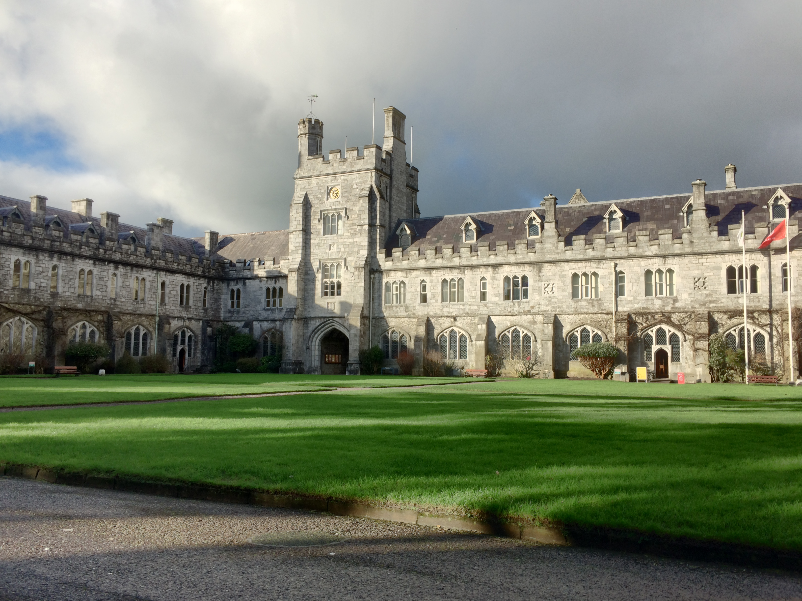

{% load static %}

<section id="education">
    
    <span class="credit">image credit: <a href="https://commons.wikimedia.org/wiki/File:County_Cork_-_University_College_Cork_-_20190125141016.jpg" target="_blank" rel="noopener noreferrer">Michael O'Sheil</a></span>
    <h1> Education </h1>
    <section id="comp_science_overview" >
        <h1> Studying <a href="https://www.ucc.ie/en/ck401/">Computer Science</a> in University College Cork</h1>
        <section class="year_overview"> 
            <h1> 1<sup>st</sup> Year Key Grades</h1>
            <ul id="year1_key_grades" >
                <li>
                    <label for="web_dev"> Web Development I&II(HTML, CSS, Javascript, Python): </label>
                    <section class="more_info">    
                        <span> Building of static and dynamic(python) generated websites, with good modern practices. Querying & storing into database while insuring security. </span>
                    </section>
                    <progress class="progress_bar" id="web_dev" value="40" max="100" data-label="40%"></progress>
                    <progress class="progress_bar" id="web_dev" value="75" max="100" data-label="75%"></progress>
                </li>
                <li>
                    <label for="systems_organisation"> Systems Organisation I&II: </label>
                    <section class="more_info">    
                        <span> Semester 1: Forming the understanding of low level programming, and introduction to the functional components of the PC. </span>
                        <span> Semester 2: Understanding converting between Binary, Hex, Octal and Decimal metrics, and understanding the workings of Logic gates. </span>
                    </section>
                    <progress class="progress_bar" id="systems_organisation" value="40" max="100" data-label="40%"></progress>
                    <progress class="progress_bar" id="systems_organisation" value="70" max="100" data-label="70%"></progress>
                </li>
                <li>
                    <label for="intro_to_prog"> Introduction to Programming(Python): </label>
                    <section class="more_info">    
                        <span> Forming of knowledge of python programming and programming in general. Weekly exercise/assignment problem solving questions with a big focus on hands on work.</span>
                    </section>
                    <progress class="progress_bar" id="intro_to_prog" value="70" max="100" data-label="70%"></progress>
                </li>
                <li>
                    <label for="foundation_of_comp"> Foundations of Computer Science I&II: </label>
                    <section class="more_info">    
                        <span> Formed the basic tools for analysing computational problems, and build a better understanding using proofs of logical statements. </span>
                    </section>
                    <progress class="progress_bar" id="foundation_of_comp" value="53" max="100" data-label="53%"></progress>
                    <progress class="progress_bar" id="foundation_of_comp" value="61" max="100" data-label="61%"></progress>
                </li>
            </ul>
            <span> 709/1200 Marks in 1<sup>st</sup> Year </span>
        </section>

        <section class="year_overview">
            <h1> 2<sup>nd</sup> Year Key Grades </h1>
            <ul>
                <li>
                    <label for="intermediate_prog"> Intermediate Programming(Python): </label>
                    <section class="more_info">    
                        <span> Introduction to object orientated programming and overview of graphical user interfaces </span>
                    </section>
                    <progress class="progress_bar" id="intermediate_prog" value="53" max="100" data-label="53%"></progress>
                </li>
                <li>
                    <label for="comp_architecture"> Computer Architecture: </label>
                    <section class="more_info">    
                        <span> Introducion to the taxonomies of Computer Design. Basic concerns of Computer Architecture. Overview of the technology trends that drive the industry. </span>
                    </section>
                    <progress class="progress_bar" id="comp_architecture" value="52" max="100" data-label="52%"></progress>
                </li>
                <li>
                    <label for="data_structures_and_algorithms"> Data Structures & Algorithms Semester I&II: </label>
                    <section class="more_info">    
                        <span> Semester 1: Involved implementing data structures(linked lists, binary search trees) and their application in the creation of efficient software. </span>
                        <span> Semester 2: Involved programming sorting algorithms of n<sup>2</sup> and <sub>n</sub>logn. Programming and querying graph algorithms, while also continuing the evaluation of algorithm performance analysis techniques similar to semester 1. </span>
                    </section>
                    <progress class="progress_bar" id="data_structures_and_algorithms" value="70" max="100" data-label="70%"></progress>
                    <progress class="progress_bar" id="data_structures_and_algorithms" value="67" max="100" data-label="67%"></progress>
                </li>
                <li>
                    <label for="network_computing"> Network Computing: </label>
                    <section class="more_info">
                        <span> Introduction to fundamentals of internetworking, Internet Services involving calculations and the higher-layer Internet protocols. </span>
                    </section>
                    <progress class="progress_bar" id="network_computing" value="80" max="100" data-label="80%"></progress>
                </li>
                <li>
                    <label for="intro_to_java"> Introduction to Java: </label>
                    <section class="more_info">
                        <span> Builds on the concept from Introduction to programming with concepts similar to Intermediate programming on topics from Object Orientated programming with great focus on implementing computer programs of increased refinement and complexity. </span>
                    </section>
                    <progress class="progress_bar" id="intro_to_java" value="81" max="100" data-label="81%"></progress>
                </li>
                <li>
                    <label for="operating_systems"> Operating Systems Semester I&II: </label>
                    <section class="more_info">
                        <span> Semester 1: Bash scripting, working with the command line. </span>
                        <span> Semester 2: Systems programming revolving around process management. </span>
                    </section>
                    <progress class="progress_bar" id="operating_systems" value="83" max="100" data-label="83%"></progress>
                    <progress class="progress_bar" id="operating_systems" value="79" max="100" data-label="79%"></progress>
                </li>
                <li>
                    <label for="info_storage_and_management"> Information Storage & Management Semester I&II: </label>
                    <section class="more_info">
                        <span> Databases Module which involved: mySQL, Neo4j, MongoDB. </span>
                    </section>
                    <progress class="progress_bar" id="info_storage_and_management" value="72" max="100" data-label="72%"></progress>
                    <progress class="progress_bar" id="info_storage_and_management" value="75" max="100" data-label="75%"></progress>
                </li>
            </ul>
            <span> 800/1200 Marks in 2<sup>nd</sup> Year </span>
        </section>
    </section>
</section>